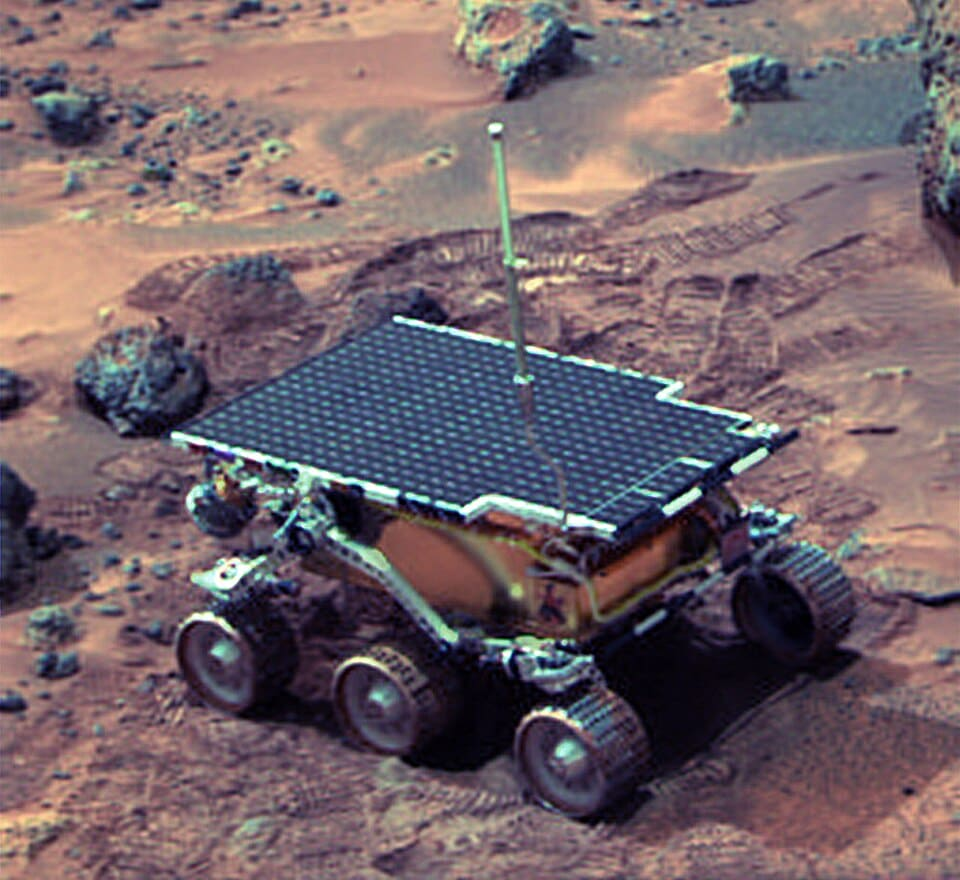
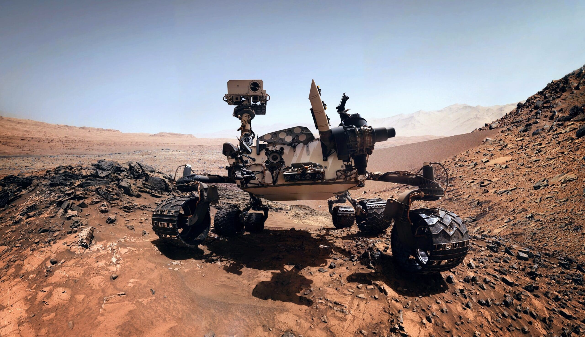
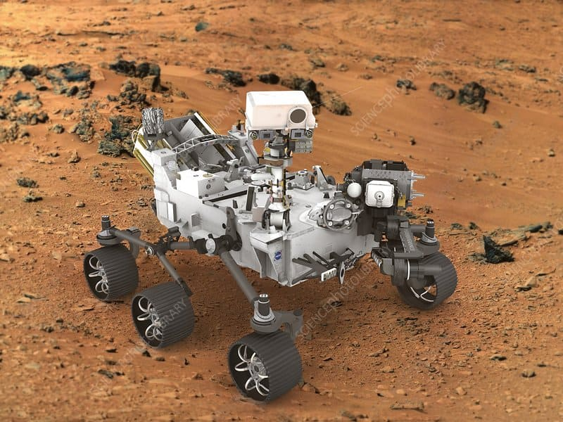

Mission History
1997 - Sojourner
Mission Goals: Demonstrate the feasibility of low-cost landings on Mars.
Overview: Sojourner explored the Martian surface for 83 days.
Launch: December 4, 1996 | Landing: July 4, 1997
Major Discoveries: Evidence of rocks and soil types, indicating past water.
Key Technical Features: Solar-powered, six-wheel rocker-bogie suspension.
2004 - Spirit and Opportunity

Mission Goals: Explore Martian geology and search for signs of water.
Overview: Twin rovers designed for extensive exploration.
Launch: Spirit: June 10, 2003 | Opportunity: July 7, 2003 | Landing: January 2004
Major Discoveries: Evidence of water, hematite "blueberries".
Key Technical Features: Solar-powered, panoramic cameras, spectrometers.
2012 - Curiosity
Mission Goals: Assess Mars' habitability for microbial life.
Overview: Advanced nuclear-powered rover exploring Gale Crater.
Launch: November 26, 2011 | Landing: August 6, 2012
Major Discoveries: Organic molecules, methane gas fluctuations.
Key Technical Features: Nuclear-powered, ChemCam laser, robotic arm.
2021 - Perseverance
Mission Goals: Search for signs of ancient life, collect rock samples.
Overview: Most advanced rover, equipped with a helicopter (Ingenuity).
Launch: July 30, 2020 | Landing: February 18, 2021
Major Discoveries: Diverse rock types in Jezero Crater.
Key Technical Features: Nuclear-powered, SuperCam, Ingenuity helicopter.